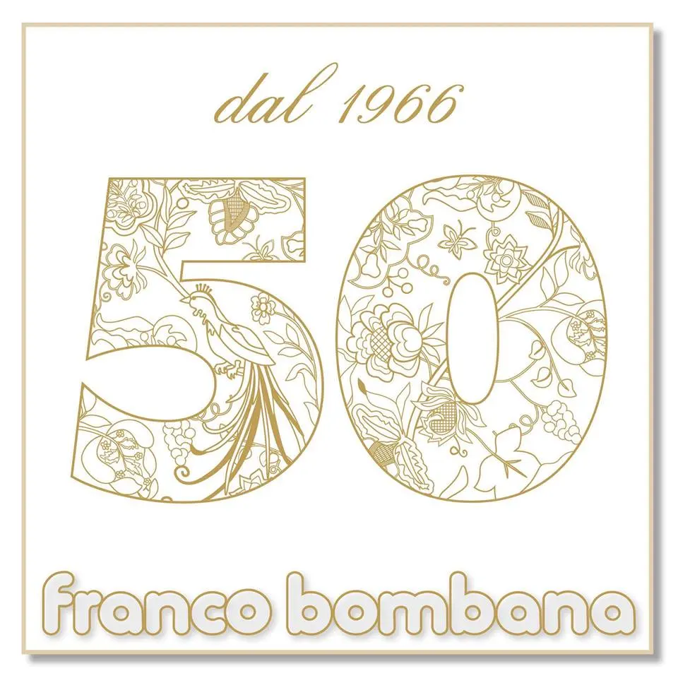
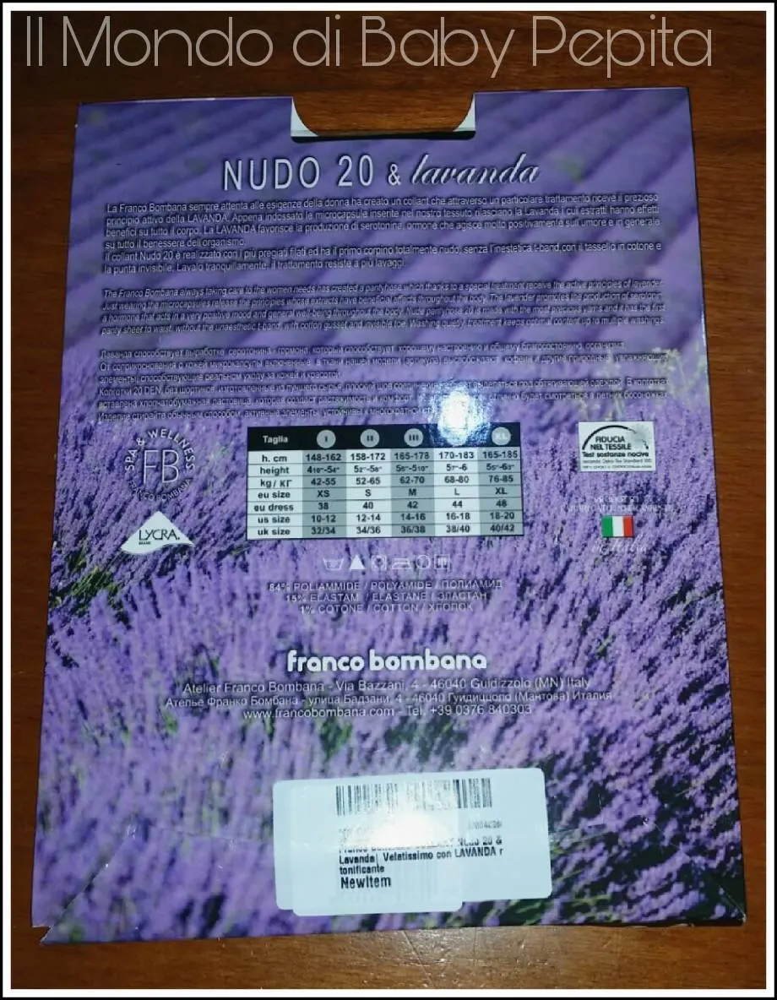
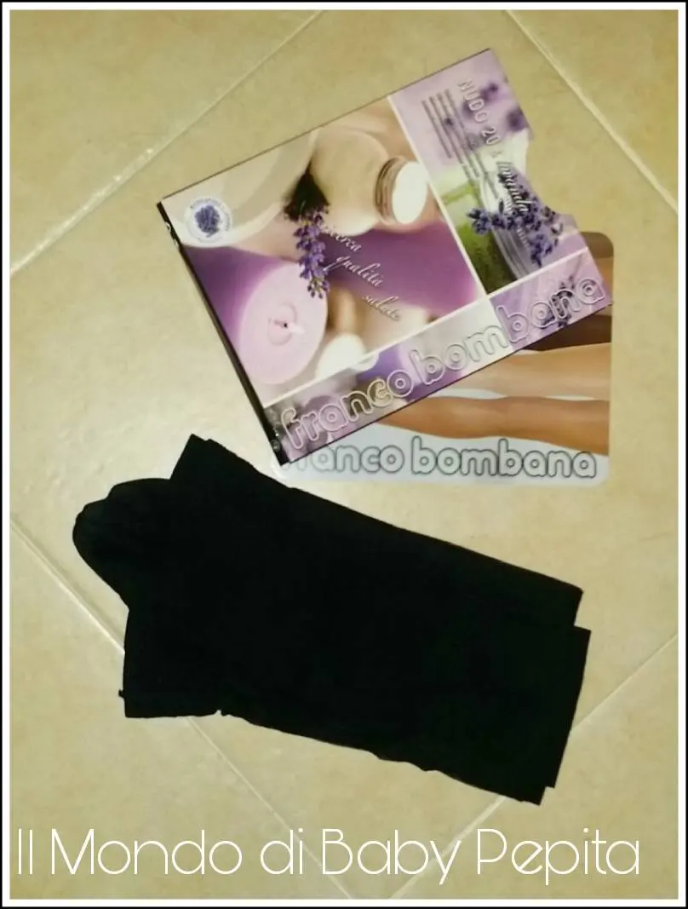
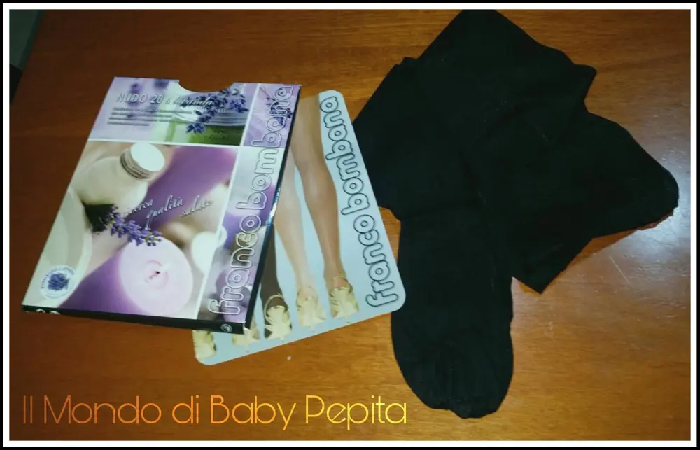

Franco Bombana

Ho sentito parlare di scarpe rilassanti, creme che sollevano la stanchezza, plantari che aiutassero a sopportare i tacchi, ma di calze rilassanti no!Ed è stata una vera novità per me scoprire questi collant profumati di Franco Bombana.
La Franco Bombana sempre attenta alle esigenze della donna ha creato un collant che attraverso un particolare trattamento riceve il prezioso principio attivo della LAVANDA. Appena indossato le microcapsule inserite nel nostro tessuto rilasciano la Lavanda i cui estratti hanno effetti benefici su tutto il corpo. La LAVANDA favorisce la produzione di serotonina, ormone che agisce molto positivamente sull'umore e in generale su tutto il benessere dell'organismo.

Perché la LAVANDA?
I suoi straordinari benefici sono noti da molto tempo: è rinfrescante, rilassante, tonificante, favorisce la produzione di serotonina, ormone che agisce molto positivamente sull'umore e in generale su tutto il benessere dell'organismo!

Ci sono anche in altre profumazioni come:
- Caffeina
- Aloe vera
Ovviamente non ci sono solo di 20 denari di quest'azienda ma anche di 15,30, 50, 70, 80, 100 den ma non sono però profumate ma comunque massaggianti e contenitive.

TAGLIE DISPONIBILI:
- TG. 2 h. cm 158-172 peso kg. 52-65
- TG. 3 h. cm 165-178 peso kg. 62-70
- TG. 4 h. cm 170-183 peso kg. 68-80
- TG. XL h. cm 165-185 peso kg. 76-85
Disponibili in due diverse colorazioni NATURAL e NERO.
Una volta indossate sentiamo questa fragranza su di noi, ed effettivamente questo è molto piacevole perché fino ad ora non avevo mai acquistato un paio di collant profumati.

Un’altra nota positiva la troviamo sulla punta del collant, non ha quella fastidiosissima fascia inestetica, infatti risultano molto più comode da indossare.
PREZZO: 6,99 €
Potete acquistarle CLICCANDO QUESTA SCRITTA BLU
Su facebook invece QUI
Per quanto riguarda me seguitemi:FACEBOOKINSTAGRAMTWITTERYOUTUBE